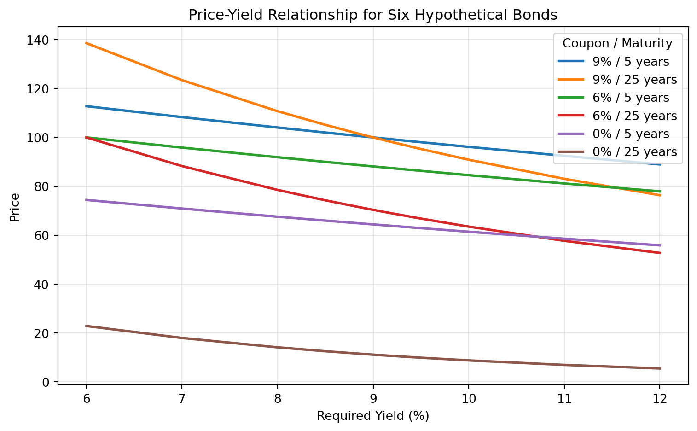
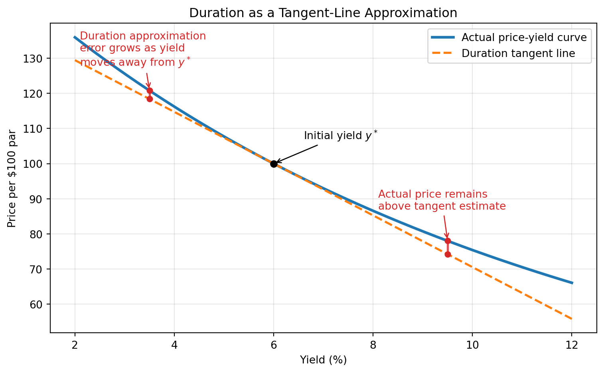
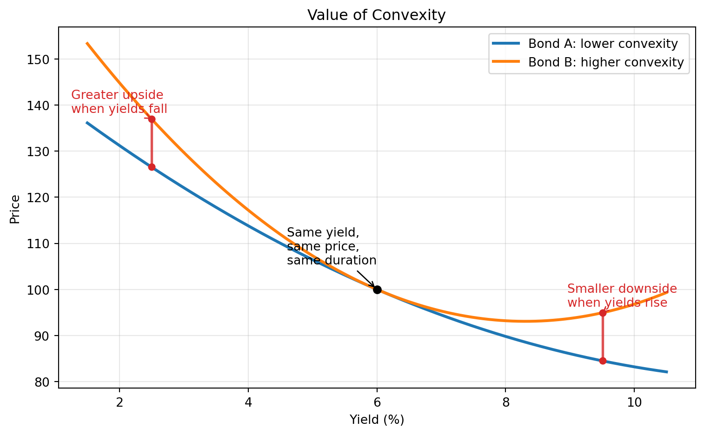
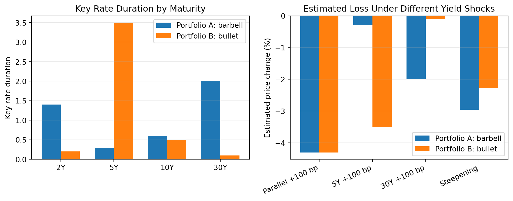

Lecture 3: Bond Price Volatility, Duration, Convexity, and Bond Portfolio Strategies
Learning Objectives
By the end of this lecture you should be able to:
- Review and interpret the price–yield relationship for option-free bonds.
- Explain the main price-volatility properties of option-free bonds.
- Identify the bond characteristics that affect price volatility.
- Compute and interpret price value of a basis point, yield value of a price change, duration, and convexity.
- Use duration and convexity to approximate percentage and dollar price changes.
- Distinguish between analytical duration and empirical duration.
- Explain spread duration, portfolio duration, key rate duration, and yield curve reshaping duration.
- Understand practical limitations of duration as a risk measure.
- Explain why duration is not simply a measure of time.
- Interpret the duration of inverse floaters.
- Describe how bond portfolio responsiveness changes under nonparallel shifts in the yield curve.
- Explain the main bond portfolio strategy frameworks, including benchmark-based, absolute return, and liability-driven strategies.
- Understand the role of bond benchmarks and the limitations of market-cap-weighted bond indexes.
- Distinguish between top-down and bottom-up portfolio construction.
- Explain active strategies, smart beta approaches, and the use of leverage in bond portfolio management.
1 Review of the Price–Yield Relationship for Option-Free Bonds
For an option-free bond, price and yield move in opposite directions. When the required yield rises, the bond price falls. When the required yield falls, the bond price rises. This inverse relationship follows directly from the bond pricing formula because future cash flows are discounted at the required yield.
An option-free bond is a bond whose promised cash flows do not change because of an embedded call, put, or prepayment option. This matters because the price response can be studied cleanly: the cash flows are fixed, so the only thing changing in the present value calculation is the discount rate. If the market requires a higher return to hold the bond, each promised coupon and principal payment is worth less today. If the market requires a lower return, those same cash flows are worth more today.
For a bond with coupon payment \(C\), face value \(F\), maturity \(n\), and required yield \(y\), the price is
\[ P = \sum_{t=1}^{n} \frac{C}{(1+y)^t} + \frac{F}{(1+y)^n}. \]
Because the denominator increases when \(y\) increases, the present value of each cash flow falls, and therefore the bond price falls.
The relationship is inverse, but it is not linear. A graph of price against required yield is curved, or convex. This curvature is central to the rest of the lecture. It means that the price gain from a large fall in yield is larger than the price loss from an equal-sized rise in yield, all else equal.
In practice, a bond price can change over time for several reasons:
- The required market yield changes.
- The perceived credit risk of the issuer changes.
- A premium or discount bond moves closer to maturity.
- The benchmark yield curve changes shape.
In this section, we isolate the first effect: an instantaneous change in the required yield, holding the promised cash flows fixed.
NoteWorked Example
Review of the Price–Yield Relationship
Suppose a 3-year bond has:
- Face value = $1,000
- Annual coupon = $60
- Required yield = 5%
Its price is
\[ P = \frac{60}{1.05} + \frac{60}{1.05^2} + \frac{1060}{1.05^3} = 57.14 + 54.42 + 915.91 = 1027.47. \]
If the required yield rises to 7%, the new price is
\[ P = \frac{60}{1.07} + \frac{60}{1.07^2} + \frac{1060}{1.07^3} = 56.07 + 52.40 + 865.38 = 973.85. \]
The bond price falls from $1,027.47 to $973.85 when the required yield rises from 5% to 7%.
TipIntuition
A bond is a package of future dollars. Yield is the rate used to translate those future dollars into today’s dollars. A higher yield is a higher discount rate, so today’s value is lower.
| Required Yield (%) | 9% / 5 years | 9% / 25 years | 6% / 5 years | 6% / 25 years | 0% / 5 years | 0% / 25 years |
|---|---|---|---|---|---|---|
| 6.00 | 112.7953 | 138.5946 | 100.0000 | 100.0000 | 74.4094 | 22.8107 |
| 7.00 | 108.3166 | 123.4556 | 95.8417 | 88.2722 | 70.8919 | 17.9053 |
| 8.00 | 104.0554 | 110.7410 | 91.8891 | 78.5178 | 67.5564 | 14.0713 |
| 8.50 | 102.0027 | 105.1482 | 89.9864 | 74.2587 | 65.9537 | 12.4795 |
| 8.90 | 100.3966 | 100.9961 | 88.4983 | 71.1105 | 64.7017 | 11.3391 |
| 8.99 | 100.0395 | 100.0988 | 88.1676 | 70.4318 | 64.4236 | 11.0975 |
| 9.00 | 100.0000 | 100.0000 | 88.1309 | 70.3570 | 64.3928 | 11.0710 |
| 9.01 | 99.9604 | 99.9013 | 88.0943 | 70.2824 | 64.3620 | 11.0445 |
| 9.10 | 99.6053 | 99.0199 | 87.7654 | 69.6164 | 64.0855 | 10.8093 |
| 9.50 | 98.0459 | 95.2539 | 86.3214 | 66.7773 | 62.8723 | 9.8242 |
| 10.00 | 96.1391 | 90.8720 | 84.5565 | 63.4881 | 61.3913 | 8.7204 |
| 11.00 | 92.4624 | 83.0685 | 81.1559 | 57.6712 | 58.5431 | 6.8767 |
| 12.00 | 88.9599 | 76.3572 | 77.9197 | 52.7144 | 55.8395 | 5.4288 |
2 Price-Volatility Characteristics of Option-Free Bonds
The price-volatility properties of option-free bonds describe how different bonds respond to changes in required yield.
Property 1
Although the prices of all option-free bonds move in the opposite direction from the change in required yield, the percentage price change is not the same for all bonds.
Some bonds are more sensitive to changes in yield than others. Longer maturity bonds and lower coupon bonds tend to experience greater percentage price changes for a given change in yield.
For example, a 25-year coupon bond usually reacts more strongly to a 100-basis-point yield increase than a 5-year coupon bond with the same coupon rate. The reason is timing: more of the long bond’s value comes from cash flows far in the future, and distant cash flows are more affected by changes in the discount rate.
The same logic explains why lower-coupon bonds are more volatile. A low-coupon bond pays less cash early and returns more of its value at maturity. Its value is therefore more concentrated in later cash flows, making it more sensitive to the discount rate.
Property 2
For very small changes in the required yield, the percentage price change for a given bond is roughly the same whether the required yield increases or decreases.
This is the local linear approximation behind duration.
For instance, a 1-basis-point increase and a 1-basis-point decrease usually produce almost symmetric percentage price changes. The price-yield curve is still curved, but over a tiny interval the curve looks almost like a straight line. Duration uses exactly this idea.
Property 3
For large changes in the required yield, the percentage price change is not the same for an increase in the required yield as it is for a decrease in the required yield.
This occurs because the price–yield relationship is curved rather than linear.
If a bond loses about 9% when yields rise by 100 basis points, it will not necessarily gain exactly 9% when yields fall by 100 basis points. The difference becomes more important as the yield shock becomes larger and as the bond becomes more convex.
Property 4
For a given large change in basis points, the percentage price increase is greater than the percentage price decrease.
This is the practical consequence of convexity. The curvature of the price–yield relationship makes price gains from falling yields larger than price losses from equally sized yield increases.
For a long investor, positive convexity is beneficial. If yields fall, the upside price move is amplified; if yields rise, the downside move is dampened relative to a straight-line approximation. For a short seller, the same property works in the opposite direction: the potential loss from falling yields is larger than the potential gain from rising yields.
2.1 Characteristics of a Bond That Affect Its Price Volatility
The main bond characteristics affecting price volatility are:
- Time to maturity
- Coupon rate
For option-free bonds:
- Longer maturity generally means greater price volatility.
- Lower coupon generally means greater price volatility.
- Lower yield generally implies greater price volatility.
The maturity and coupon effects are easiest to understand through cash-flow timing. A high-coupon bond returns more cash earlier through coupon payments, so less of its value depends on distant cash flows. A zero-coupon bond has only one cash flow at maturity, so its full value is exposed to discount-rate changes over the entire life of the bond.
NoteExample: Coupon and Maturity Effects
Consider three bonds with the same required yield:
- A 5-year 9% coupon bond
- A 25-year 9% coupon bond
- A 25-year zero-coupon bond
The 25-year coupon bond is more volatile than the 5-year coupon bond because its cash flows extend farther into the future. The 25-year zero-coupon bond is typically even more volatile because all of its cash flow arrives at maturity.
2.2 Effects of Yield to Maturity
For two otherwise identical option-free bonds, the bond with the lower yield to maturity will exhibit greater percentage price volatility for a given change in yield. This effect is related to the curvature of the present value function.
When yields are already low, a given basis-point move is large relative to the starting discount rate. Also, the price-yield curve is steeper at lower yields. This means the same 100-basis-point change has a larger percentage price impact when the initial yield is 4% than when the initial yield is 10%, all else equal.
This point is important in low-rate environments. A portfolio that appears to have moderate risk based on historical yield levels may become more sensitive when yields are low. The same maturity and coupon structure can produce larger price swings simply because the starting yield is lower.
3 Measures of Bond Price Volatility
Several measures are used to summarize how sensitive a bond’s price is to changes in yield.
3.1 Price Value of a Basis Point
The price value of a basis point (PVBP), a.k.a. dollar value of an 01 (DV01), measures the change in the price of a bond for a one-basis-point change in yield.
A basis point is
\[ 0.01\% = 0.0001. \]
PVBP is often approximated by repricing the bond at yields \(y\) and \(y+0.0001\) and taking the difference.
\[ PVBP \approx P(y) - P(y+0.0001). \]
It is a dollar measure of interest-rate sensitivity.
PVBP is usually reported as an absolute value. If a bond price falls by 0.04 per $100 of par when yield rises by one basis point, its PVBP is 0.04. For a $10 million position, the dollar impact is scaled by position size:
\[ \text{Dollar PVBP} = 0.04 \times \frac{10{,}000{,}000}{100} = 4{,}000. \]
So a one-basis-point yield increase would reduce the position value by about $4,000. Traders often use PVBP or DV01 because it converts rate exposure into dollars immediately.
| Measure | 5-year 9% coupon | 25-year 9% coupon | 5-year 6% coupon | 25-year 6% coupon | 5-year zero-coupon | 25-year zero-coupon |
|---|---|---|---|---|---|---|
| Initial Price (9% yield) | 100.0000 | 100.0000 | 88.1309 | 70.3570 | 64.3928 | 11.0710 |
| Price at 9.01% | 99.9604 | 99.9013 | 88.0945 | 70.2824 | 64.3620 | 11.0445 |
| DV01 | 0.0396 | 0.0987 | 0.0364 | 0.0746 | 0.0308 | 0.0265 |
3.2 Yield Value of a Price Change
The yield value of a price change (YVPC) is the change in yield associated with a specified change in price. It is the inverse way of thinking about price sensitivity.
For example, suppose a bond is priced at 100 and we ask how much the yield must increase for the price to fall to 99. If a small yield increase produces that $1 price decline, the bond is highly price-sensitive. If it takes a much larger yield increase to produce the same price decline, the bond is less price-sensitive.
YVPC is less common than PVBP and duration in portfolio risk reports, but it is useful when the portfolio manager is thinking in price terms: “How many basis points of yield movement would wipe out one point of price?”
3.3 Duration
Duration is one of the most important measures of bond price sensitivity.
The central interpretation is:
\[ \text{Modified duration} \approx \text{percentage price change for a 100-basis-point yield change}. \]
The sign is inverse. A bond with modified duration of 6 is expected to lose roughly 6% if yield rises by 100 basis points and gain roughly 6% if yield falls by 100 basis points, before accounting for convexity.
Macaulay Duration
The Macaulay duration is the weighted average time to receipt of the bond’s cash flows, where the weights are the present values of the cash flows as a proportion of the bond price.
\[ D_M = \frac{\sum_{t=1}^{n} t \cdot \frac{CF_t}{(1+y)^t}}{P} \]
For bonds with semiannual coupons, duration is first computed in periods and then divided by the number of periods per year.
The weights in Macaulay duration are not based on the raw cash flows. They are based on the present values of the cash flows. A large principal payment far in the future may be heavily discounted, while a near-term coupon has a smaller dollar amount but receives less discounting. Macaulay duration combines both timing and present value.
For a zero-coupon bond, there is only one cash flow. Therefore, 100% of the present value weight is placed on the maturity date, and Macaulay duration equals maturity.
Modified Duration
The modified duration converts Macaulay duration into a direct measure of price sensitivity:
\[ D^* = \frac{D_M}{1+y} \]
for annual compounding, or more generally
\[ D^* = \frac{D_M}{1+y/m} \]
when payments occur \(m\) times per year.
Modified duration gives the approximate percentage price change for a small change in yield:
\[ \frac{\Delta P}{P} \approx -D^* \Delta y \]
The negative sign is essential. Duration itself is normally reported as a positive number for option-free bonds, but the price response has the opposite sign of the yield change.
NoteExample: Modified Duration
If a bond has modified duration of 4.5 and its yield increases by 25 basis points, then
\[ \frac{\Delta P}{P} \approx -4.5(0.0025) = -0.01125. \]
The bond price is expected to fall by about 1.125%.
Derivation of the Duration Approximation
Start with the bond price formula:
\[ P(y) = \sum_{t=1}^{n} \frac{CF_t}{(1+y)^t} \]
Differentiate with respect to \(y\):
\[ \frac{dP}{dy} = \sum_{t=1}^{n} -t \frac{CF_t}{(1+y)^{t+1}} \]
Divide by \(P\):
\[ \frac{1}{P}\frac{dP}{dy} = -\frac{1}{1+y} \cdot \frac{\sum_{t=1}^{n} t \frac{CF_t}{(1+y)^t}}{P} \]
This yields
\[ \frac{1}{P}\frac{dP}{dy} = -D^* \]
which leads to the approximation
\[ \frac{\Delta P}{P} \approx -D^* \Delta y. \]
The derivative gives the slope of the price-yield curve at the current yield. Duration is therefore a local risk measure: it describes the slope at one point, not the full curve. This is why duration works well for small changes in yield but becomes less accurate for large changes.
NoteExample: Macaulay and Modified Duration
Suppose a 3-year bond has:
- Face value = $1,000
- Annual coupon rate = 8%
- Annual coupon payment = $80
- Yield to maturity = 6%
The bond price is the present value of its promised cash flows:
\[ P = \frac{80}{1.06} + \frac{80}{1.06^2} + \frac{1080}{1.06^3} = 1053.4602. \]
| Year | Cash Flow | Present Value at 6% | PV Weight | Contribution to Duration |
|---|---|---|---|---|
| 1 | 80 | 75.4717 | 0.0716 | 0.0716 |
| 2 | 80 | 71.1997 | 0.0676 | 0.1352 |
| 3 | 1,080 | 906.7888 | 0.8608 | 2.5823 |
| Total | 1,053.4602 | 1.0000 | 2.7891 |
The Macaulay duration is the sum of the contribution column:
\[ D_M = 0.0716 + 0.1352 + 2.5823 = 2.7891 \text{ years}. \]
The modified duration is:
\[ D^* = \frac{D_M}{1+y} = \frac{2.7891}{1.06} = 2.6313. \]
This means a small 100-basis-point increase in yield would reduce the bond price by approximately 2.6313%, before accounting for convexity.
Alternative Duration Formula
Instead of calculating Macaulay duration from each cash-flow weight and then converting it to modified duration, we can derive modified duration directly from the bond price formula.
For a standard fixed-coupon bond, price can be written as the sum of two components:
- The present value of the coupon annuity
- The present value of the face value
\[ P = C\left(\frac{1 - (1+y)^{-n}}{y}\right) + \frac{F}{(1+y)^n}, \]
where \(C\) is the coupon payment, \(F\) is face value, \(y\) is the yield per period, and \(n\) is the number of periods.
Taking the first derivative with respect to yield gives:
\[ \frac{dP}{dy} = C\left[ \frac{ny(1+y)^{-n-1} - \left(1 - (1+y)^{-n}\right)}{y^2} \right] - nF(1+y)^{-n-1}. \]
Modified duration is the negative of the percentage price derivative:
\[ D^* = -\frac{1}{P}\frac{dP}{dy}. \]
Substituting the derivative into this expression gives the alternative modified duration formula:
\[ D^* = \frac{ \frac{C}{y^2}\left[1 - (1+y)^{-n}\right] + n\left(F - \frac{C}{y}\right)(1+y)^{-n-1} }{P}. \]
Once modified duration is known, Macaulay duration is:
\[ D_M = D^*(1+y). \]
NoteExample: Alternative Duration Formula
Use the same 3-year bond:
- Face value = $1,000
- Annual coupon payment = $80
- Yield to maturity = 6%
- Price = $1,053.4602
First calculate modified duration:
\[ D^* = \frac{ \frac{80}{0.06^2}\left[1 - 1.06^{-3}\right] + 3\left(1000 - \frac{80}{0.06}\right)1.06^{-4} }{1053.4602} = 2.6313. \]
Then convert modified duration to Macaulay duration:
\[ D_M = 2.6313(1.06) = 2.7891 \text{ years}. \]
This matches the cash-flow contribution method. The alternative formula simply gets the same duration by differentiating the annuity-plus-face-value price formula.
3.4 Properties of Duration
For option-free bonds:
- Duration is less than maturity for coupon bonds.
- Zero-coupon bond Macaulay duration equals its maturity.
- Duration increases with maturity, but at a decreasing rate.
- Duration decreases as coupon rate increases.
- Duration decreases as yield increases.
These properties match the price-volatility patterns discussed earlier. Longer maturity and lower coupon both push more value into later cash flows, increasing duration. Higher yields discount distant cash flows more heavily, reducing their present value weights and lowering duration.
One qualification is that the maturity-duration relationship is strongest for ordinary coupon bonds near normal yield levels. For very long-maturity deep-discount bonds, duration behavior can be less intuitive, so the general rule should not be applied mechanically.
NoteExample: When Longer Maturity Does Not Imply Proportionally Higher Duration
Scenario: Consider two long-term bonds in a high-yield environment where discounting is strong.
- Yield to maturity: 10%
- Both bonds have very low coupons (≈ 1%), so they behave close to deep-discount bonds
Bond A:
- Maturity: 30 years
- Coupon: 1%
- Approximate duration: ~20–22
Bond B:
- Maturity: 100 years
- Coupon: 1%
- Approximate duration: ~35–40
Naive expectation: One might expect the 100-year bond to have a duration close to 100, making it vastly more sensitive to interest rates than the 30-year bond.
What actually happens:
- The 100-year bond’s duration is far below its maturity
- Extending maturity from 30 to 100 years increases duration, but not proportionally
Why?
- Even small coupons generate intermediate cash flows
- These earlier cash flows pull duration inward
- At a 10% yield, very distant payments are heavily discounted and contribute little to present value
Implication:
- Increasing maturity from 30 → 50 years has a noticeable impact on duration
- Increasing maturity from 50 → 100 years has much smaller incremental impact
More counterintuitive case:
- Bond C: 30-year zero-coupon → duration ≈ 30
- Bond D: 100-year bond with 2% coupon → duration can be less than 30
So:
A shorter-maturity bond can have higher duration than a much longer-maturity bond.
Conclusion: The rule “longer maturity ⇒ higher duration” holds for standard bonds at typical maturities, but breaks down for very long-maturity deep-discount bonds, where duration increases at a diminishing rate and may even be lower than that of shorter bonds.
3.5 Approximating the Percentage Price Change
Modified duration gives the first-order approximation:
\[ \frac{\Delta P}{P} \approx -D^* \Delta y \]
NoteExample: Duration Approximation vs. Actual Price Change
Consider the 25-year, 6% coupon bond from earlier in this lecture, priced at 9% yield to maturity (\(P_0 = 70.357\) per $100 par, modified duration \(D^* = 10.62\)). If yield rises, the duration estimate is
\[ \frac{\Delta P}{P} \approx -D^* \Delta y. \]
Compare that linear estimate to the actual percentage price change from repricing the bond (same cash flows, new yield):
| Yield shock | New yield | New price | Duration estimate | Actual change | Difference |
|---|---|---|---|---|---|
| +100 bp | 10.00% | 63.488 | \(-10.62\%\) | \(-9.76\%\) | 0.86 pp |
| +200 bp | 11.00% | 57.671 | \(-21.24\%\) | \(-18.03\%\) | 3.21 pp |
For the 100-basis-point increase:
\[ \frac{\Delta P}{P} \approx -10.62(0.01) = -10.62\%, \]
but the true price change is \((63.488/70.357 - 1) \approx -9.76\%\). The duration rule is close but still overstates the loss by about 0.86 percentage points.
For the 200-basis-point increase:
\[ \frac{\Delta P}{P} \approx -10.62(0.02) = -21.24\%, \]
while the actual change is \((57.671/70.357 - 1) \approx -18.03\%\). The gap widens to about 3.21 percentage points because duration forces a curved price–yield relationship into a straight-line estimate. Convexity (developed below) corrects part of this error for larger shocks.
3.6 Approximating the Dollar Price Change
Multiply the percentage change by the bond price:
\[ \Delta P \approx -D^* P \Delta y \]
The product \(D^*P\) is often called dollar duration:
\[ \text{Dollar duration} = -D^*P. \]
For a bond priced at 70.357 with modified duration of 10.62,
\[ \Delta P \approx -10.62(70.357)(0.0001) = -0.0747 \]
for a one-basis-point yield increase. This is essentially the same information as PVBP, expressed through duration.
3.7 Spread Duration
Spread duration measures the sensitivity of a bond’s price to a change in its credit spread, holding the benchmark yield curve fixed.
It is especially important for corporate bonds, high-yield bonds, and structured products.
For a non-Treasury bond, yield can be thought of as:
\[ \text{Bond yield} = \text{Treasury yield} + \text{credit spread}. \]
Treasury duration measures exposure to changes in benchmark rates. Spread duration measures exposure to changes in the extra compensation investors require for credit, liquidity, or sector risk.
A corporate bond with spread duration of 5 would be expected to lose about 5% if its credit spread widens by 100 basis points, assuming Treasury rates are unchanged. A Treasury bond has no credit spread relative to itself, so its spread duration is zero.
For floating-rate securities, spread duration is also important because the coupon resets with short-term rates, but the quoted margin is fixed. If the market demands a higher margin than the security pays, the floater’s price falls.
3.8 Portfolio Duration
Portfolio duration measures the interest-rate sensitivity of the whole portfolio. It is the market-value-weighted average duration of the individual holdings:
\[ D_P = \sum_{i=1}^{N} w_i D_i \]
where
\[ w_i = \frac{\text{Market Value of Bond } i}{\text{Total Portfolio Market Value}}. \]
The market-value weights are essential. A small position in a high-duration bond may contribute less portfolio risk than a large position in a moderate-duration bond. For that reason, managers usually focus on each holding’s contribution to portfolio duration:
\[ \text{Contribution to portfolio duration} = \text{portfolio weight} \times \text{duration of issue}. \]
NoteExample: Bond-Level Contribution to Portfolio Duration
Suppose a portfolio has four bonds:
| Bond | Market Value | Weight in Portfolio | Duration | Contribution to Portfolio Duration |
|---|---|---|---|---|
| A | $10,000,000 | 0.10 | 4 | 0.40 |
| B | $40,000,000 | 0.40 | 7 | 2.80 |
| C | $30,000,000 | 0.30 | 6 | 1.80 |
| D | $20,000,000 | 0.20 | 2 | 0.40 |
| Total | $100,000,000 | 1.00 | 5.40 |
The portfolio duration is 5.40. Bond B contributes the most because it has both a large portfolio weight and a high duration.
The same logic can be applied to sectors. This is useful because two portfolios can have similar total duration but different exposure to Treasury, corporate, mortgage-backed, or agency-related sectors.
NoteExample: Portfolio Duration vs. Benchmark by Sector
Consider a portfolio with the following sector weights and durations:
| Sector | Portfolio Sector Weight | Sector Duration | Contribution to Portfolio Duration |
|---|---|---|---|
| Treasury | 0.295 | 7.25 | 2.14 |
| Government Related | 0.036 | 1.94 | 0.07 |
| Agency MBS | 0.290 | 5.17 | 1.50 |
| Corporates | 0.379 | 4.85 | 1.84 |
| Total | 1.000 | 5.55 |
Compare that portfolio with its benchmark (e.g. the Barclays US Aggregate Bond Index):
| Sector | Benchmark Weight | Benchmark Sector Duration | Contribution to Benchmark Duration |
|---|---|---|---|
| Treasury | 0.333 | 5.32 | 1.77 |
| Government Related | 0.068 | 5.88 | 0.40 |
| Agency MBS | 0.333 | 4.53 | 1.51 |
| Corporates | 0.266 | 6.50 | 1.73 |
| Total | 1.000 | 5.41 |
The total durations are close: 5.55 for the portfolio versus 5.41 for the benchmark. The portfolio is therefore approximately duration neutral relative to the benchmark. But the sector contributions are not identical:
| Sector | Portfolio Contribution | Benchmark Contribution | Difference |
|---|---|---|---|
| Treasury | 2.14 | 1.77 | 0.37 |
| Government Related | 0.07 | 0.40 | -0.33 |
| Agency MBS | 1.50 | 1.51 | -0.01 |
| Corporates | 1.84 | 1.73 | 0.11 |
| Total | 5.55 | 5.41 | 0.14 |
Sector yields and spreads do not always move together. A portfolio can be close to benchmark duration overall while still taking active bets on where that duration exposure is located.
3.9 Analytical versus Empirical Duration
- Analytical duration is computed from a pricing formula.
- Empirical duration is estimated by repricing the bond under shifted yields and observing the resulting price change.
Empirical duration is often necessary for bonds with uncertain cash flows or embedded options.
Analytical duration is cleanest for option-free bonds because the cash flows are fixed and the pricing formula is explicit. Empirical duration is more general. It asks a practical question: if the pricing model is shocked upward and downward by a small yield change, how much does the price move?
For high-quality corporate bonds, analytical duration often captures much of the interest-rate risk because the bond behaves similarly to an option-free bond plus a credit spread. For lower-rated or distressed bonds, the measured price movement may be driven more by equity-like credit risk than by Treasury-rate movements. In that case, a duration estimated from historical regression may differ meaningfully from a formula-based duration.
The key distinction is:
- Analytical duration comes from a valuation formula or pricing model.
- Empirical duration comes from observed or simulated price responses.
- Poor pricing models produce poor duration estimates.
4 Convexity
Duration, PVBP, and related measures work well for small changes in yield or price. Their limitation is that they approximate a curved price-yield relationship with a straight line. Convexity adds the second-order effect: it measures the curvature of the bond price function.
The duration approximation is the tangent line to the price-yield curve at the initial yield. At that point, duration gives the slope of the curve. The steeper the tangent line, the greater the duration; the flatter the tangent line, the lower the duration.
For an option-free bond, duration changes as yields change. As yield increases, duration decreases and the tangent line becomes flatter. As yield decreases, duration increases and the tangent line becomes steeper. This is one reason the duration-only approximation is best for small yield changes and becomes less accurate for large yield changes.
4.1 Relationship Among Volatility Measures
The main measures of bond price volatility are closely related:
| Measure | Interpretation | Relationship |
|---|---|---|
| Macaulay duration, \(D_M\) | Present-value-weighted average time to cash flows | Starting point for modified duration |
| Modified duration, \(D^*\) | Approximate percentage price change for a small yield change | \(D^* = D_M / (1 + y/m)\) |
| PVBP | Dollar price change for a 1-basis-point yield change | \(\text{PVBP} \approx D^*P/10{,}000\) |
| Price-yield slope | Absolute change in price for a change in yield | Closely related to dollar duration |
| Convexity | Curvature of the price-yield relationship | Improves the duration approximation for larger yield changes |
For bonds at or near par, a rough rule is:
\[ \text{PVBP} \approx \frac{D^*}{100} \]
when price is quoted per $100 of par value.
4.2 Duration as a Tangent-Line Approximation
Duration estimates price changes using the tangent line to the price-yield curve at the initial yield \(y^*\). If we move away from \(y^*\), the tangent-line estimate differs from the actual curved price-yield relationship.
For option-free bonds, the duration-only estimate usually understates the actual price:
- If yields fall, duration underestimates the price gain.
- If yields rise, duration overstates the price loss, so the estimated ending price is too low.
The farther the yield moves from the starting yield, the larger this error becomes. Convexity corrects part of this error by adding curvature to the approximation.

4.3 Measuring Convexity
Using a Taylor series approximation, the price change can be written as:
\[ \Delta P \approx \frac{dP}{dy}\Delta y + \frac{1}{2}\frac{d^2P}{dy^2}(\Delta y)^2. \]
Dividing by price gives the approximate percentage price change:
\[ \frac{\Delta P}{P} \approx \frac{1}{P}\frac{dP}{dy}\Delta y + \frac{1}{2P}\frac{d^2P}{dy^2}(\Delta y)^2. \]
The first term is the duration effect:
\[ \frac{1}{P}\frac{dP}{dy}\Delta y = -D^*\Delta y. \]
The second derivative captures convexity. The dollar convexity measure is:
\[ \text{Dollar convexity} = \frac{d^2P}{dy^2}. \]
The convexity measure divides dollar convexity by price:
\[ \text{Convexity} = \frac{1}{P}\frac{d^2P}{dy^2}. \]
Therefore, the duration-plus-convexity approximation is:
\[ \frac{\Delta P}{P} \approx -D^*\Delta y + \frac{1}{2}\text{Convexity}(\Delta y)^2. \]
For an option-free bond with cash flows \(CF_t\), the second derivative is:
\[ \frac{d^2P}{dy^2} = \sum_{t=1}^{n} \frac{t(t+1)CF_t}{(1+y)^{t+2}}. \]
For bonds with semiannual coupons, the convexity calculation is first done in half-year periods. To annualize it, divide by \(m^2\), where \(m\) is the number of coupon payments per year. For semiannual coupon bonds, divide by \(2^2 = 4\).
4.4 Convexity of the Hypothetical Bonds
The following table summarizes the convexity measures for the six hypothetical bonds used earlier. Values are annualized.
| Bond | Second Derivative | Annualized Convexity Measure | Annualized Dollar Convexity Measure |
|---|---|---|---|
| 9% / 5-year | 7,781.02 | 19.45 | $1,945.26 |
| 9% / 25-year | 64,288.42 | 160.72 | $16,072.00 |
| 6% / 5-year | 7,349.45 | 20.85 | $1,837.36 |
| 6% / 25-year | 51,476.26 | 182.92 | $12,869.70 |
| 0% / 5-year | 6,486.30 | 25.18 | $1,621.42 |
| 0% / 25-year | 25,851.93 | 583.78 | $6,463.02 |
The table shows two important patterns:
- For a given maturity and yield, lower-coupon bonds have greater convexity.
- Longer-maturity bonds usually have greater convexity than shorter-maturity bonds.
4.5 Approximating Percentage Price Change Using Duration and Convexity
The convexity term is positive for option-free bonds because \((\Delta y)^2\) is positive whether yields rise or fall. Convexity therefore helps in both directions:
- When yields rise, convexity offsets part of the duration-based loss.
- When yields fall, convexity adds to the duration-based gain.
NoteExample: Duration Plus Convexity
Consider the 25-year, 6% coupon bond selling to yield 9%.
- Modified duration = 10.62
- Convexity measure = 182.92
- Starting price = 70.357
If the required yield rises by 200 basis points, then \(\Delta y = +0.02\).
The duration effect is:
\[ -D^*\Delta y = -10.62(0.02) = -21.24\%. \]
The convexity effect is:
\[ \frac{1}{2}(182.92)(0.02)^2 = 3.66\%. \]
The estimated percentage price change is:
\[ -21.24\% + 3.66\% = -17.58\%. \]
The actual price change from repricing the bond is approximately -18.03%, so adding convexity materially improves the duration-only estimate.
If the required yield falls by 200 basis points, then \(\Delta y = -0.02\).
The duration effect is:
\[ -10.62(-0.02) = 21.24\%. \]
The convexity effect is still positive:
\[ \frac{1}{2}(182.92)(-0.02)^2 = 3.66\%. \]
The estimated percentage price change is:
\[ 21.24\% + 3.66\% = 24.90\%. \]
The actual price change from repricing the bond is approximately 25.46%.
4.6 Notes on Convexity Measures
Three points are important.
First, convexity can refer to the general shape of the price-yield relationship, while the convexity measure is the numerical estimate used in the price-change approximation.
Second, convexity does not have the same simple interpretation as duration. A modified duration of 4 means an approximate 4% price change for a 100-basis-point change in yield. A convexity measure must be interpreted together with the squared yield change:
\[ \frac{1}{2}\text{Convexity}(\Delta y)^2. \]
Third, different vendors and textbooks may scale convexity differently. Some define convexity as:
\[ \frac{1}{2P}\frac{d^2P}{dy^2} \]
instead of:
\[ \frac{1}{P}\frac{d^2P}{dy^2}. \]
This does not change the estimated price effect as long as the formula is used consistently.
4.7 Value of Convexity
Convexity has investment value. Suppose two option-free bonds have the same yield and the same duration, but Bond B has greater convexity than Bond A. If yields rise, Bond B should lose less. If yields fall, Bond B should gain more.
Because of this payoff pattern, convexity has a market value. Investors who expect large interest-rate moves generally prefer more convex bonds because convexity helps in both directions: it increases the upside when yields fall and reduces the downside when yields rise. These investors are usually willing to pay for convexity by accepting a lower yield.
The value of convexity depends on the investor’s view of future interest-rate volatility. If an investor expects rates to be volatile, extra convexity is valuable because the bond has more opportunity to benefit from large yield moves. If an investor expects rates to remain stable, extra convexity is less useful because the price-yield curve is being evaluated only near the current yield, where duration alone is already a good approximation.
This creates a tradeoff. When the market price of convexity is high, a low-volatility investor may prefer to sell convexity by holding the less convex bond and earning a higher yield. A high-volatility investor may prefer to buy convexity, accepting a lower yield in exchange for better performance when yields move substantially.

4.8 Properties of Convexity
All option-free bonds have positive convexity, but the amount of convexity depends on yield, maturity, coupon rate, and what comparison is being made.
Property 1: As required yield increases, convexity decreases. As required yield decreases, convexity increases.
This is the standard positive convexity property of option-free bonds. When yields rise, the price of the bond falls, but duration also declines. The lower duration slows the price decline. When yields fall, the price of the bond rises, and duration increases. The higher duration accelerates the price gain.
Intuition: The slope of the price-yield curve becomes flatter as yields rise and steeper as yields fall. A flatter tangent line means lower duration; a steeper tangent line means higher duration. Convexity measures how quickly that slope, or dollar duration, changes as yields move.
Property 2: For a given yield and maturity, the lower the coupon, the greater the convexity of a bond.
This property follows from the timing of cash flows. Lower-coupon bonds return less cash early and leave more value concentrated in later cash flows. Later cash flows are more sensitive to changes in the discount rate, so the price-yield curve bends more.
Intuition: A zero-coupon bond has all of its value in one distant payment, so its price is highly sensitive to changes in yield. A high-coupon bond returns more value through earlier coupon payments, which reduces curvature. This is why, among bonds with the same yield and maturity, the zero-coupon bond has the highest convexity and the high-coupon bond has the lowest convexity.
Bond A
Property 3: For a given yield and modified duration, the lower the coupon, the smaller the convexity.
This comparison holds duration constant rather than maturity. Under this comparison, lower-coupon bonds, including zero-coupon bonds, can have lower convexity than coupon bonds with the same modified duration.
Intuition: Holding maturity fixed and holding duration fixed are different comparisons. A zero-coupon bond has duration equal to its maturity, so matching a coupon bond’s modified duration may require comparing it with a shorter-maturity zero-coupon bond. That shorter maturity reduces curvature. The investment implication is that zero-coupon bonds have the lowest convexity for a given modified duration.
Same-Duration Convexity Comparison
5 Additional Concerns When Using Duration
Duration is useful, but it has limitations:
- It is a local approximation and works best for small yield changes.
- It assumes parallel shifts in the yield curve unless modified.
- For bonds with embedded options, duration can change sharply when yields change.
- It does not capture curvature unless convexity is added.
The parallel-shift assumption is especially important. A single duration number assumes that all relevant yields move by the same number of basis points. Real yield curves often twist: short rates may rise while long rates fall, or intermediate rates may move more than both ends. A portfolio with bonds across maturities can therefore experience a value change that is poorly described by one duration number.
The embedded-option issue is also important. A callable bond may have cash flows that change when yields fall because the issuer becomes more likely to call the bond. In these cases, the price-yield relationship can depart from the option-free pattern, and effective duration is usually needed.
Practical takeaway: duration is a useful first risk measure, not a complete risk model.
6 Do Not Think of Duration as a Measure of Time
Although Macaulay duration has units of time, duration should not be interpreted simply as “time to maturity” or “average life” in a casual sense.
For risk management purposes, duration is best understood as a measure of price sensitivity to yield changes, not merely as a measure of time.
This distinction prevents confusion. Some securities can have duration greater than their legal maturity or even negative duration. That would make little sense if duration were only a time measure, but it makes sense if duration is a price-sensitivity measure.
For example, an inverse floater can have a duration of 40 even if the collateral has a 30-year maturity. The interpretation is not that the instrument has a 40-year life. The interpretation is that a 100-basis-point rate change may change the value by roughly 40%.
When in doubt, use the operational interpretation:
\[ \text{Duration} \approx \text{percentage price sensitivity to a 100-basis-point yield change}. \]
7 Approximating a Bond’s Duration and Convexity Measure
In practice, duration and convexity are often approximated numerically by repricing the bond at yields above and below the current yield.
This is the standard approach in commercial analytics. Instead of manually differentiating a price formula, the analyst shocks the relevant yield or curve, reprices the security, and converts the price response into duration and convexity. This works for plain bonds and can also work for complex securities if the pricing model handles changing cash flows.
An empirical approximation to duration is
\[ D^* \approx \frac{P_- - P_+}{2P_0 \Delta y} \]
where:
- \(P_-\) = price if yield decreases
- \(P_+\) = price if yield increases
- \(P_0\) = current price
An empirical approximation to convexity is
\[ \text{Convexity} \approx \frac{P_- + P_+ - 2P_0}{P_0 (\Delta y)^2} \]
NoteExample: Numerical Duration and Convexity
Suppose a bond has:
- Current price \(P_0 = 70.3570\)
- Price if yield falls by 10 basis points: \(P_- = 71.1105\)
- Price if yield rises by 10 basis points: \(P_+ = 69.6164\)
- \(\Delta y = 0.001\)
Approximate duration is
\[ D^* \approx \frac{71.1105 - 69.6164}{2(70.3570)(0.001)} = 10.62. \]
Approximate convexity is
\[ \frac{71.1105 + 69.6164 - 2(70.3570)} {70.3570(0.001)^2} = 183.3. \]
These numerical estimates are close to the formula-based values for an option-free bond.
7.1 Duration of an Inverse Floater
The duration of an inverse floater can be very large because its coupon moves inversely with rates. The bond’s cash flows become more favorable when rates fall and less favorable when rates rise, increasing price sensitivity.
An inverse floater is often created by splitting collateral into a floater and an inverse floater. The floater receives coupons that move with rates. The inverse floater receives the residual cash flow, so its coupon moves in the opposite direction.
If the floater’s duration is close to zero, the inverse floater absorbs most of the interest-rate exposure of the collateral. A useful approximation is:
\[ \text{Duration of inverse floater} = (1+L) (\text{duration of collateral}) \times \frac{\text{collateral price}}{\text{inverse price}}, \]
where \(L\) is the ratio of floater par value to inverse floater par value.
Example: if $100 million of collateral is split into an $80 million floater and a $20 million inverse floater, then \(L=4\). If both trade near par and the collateral duration is 8, the inverse floater duration is approximately
\[ (1+4)(8)=40. \]
The inverse floater is therefore a leveraged exposure to the collateral’s rate sensitivity.
8 Measuring a Bond Portfolio’s Responsiveness to Nonparallel Changes in Interest Rates
When the yield curve changes in a nonparallel way, standard duration is not enough. A portfolio can be exposed differently to short-, intermediate-, and long-term rates.
A parallel shift means every maturity point on the yield curve moves by the same number of basis points. Many real-world moves are nonparallel.
NoteYield Curve Movements: Steepening, Flattening, Twists, and Curvature
The yield curve does not always move in parallel. Most real-world changes can be understood as combinations of level, slope, and curvature shifts.
1. Parallel Shift (Level Move)
- All yields increase or decrease by roughly the same amount
- Driven by broad macro factors (e.g., monetary policy, inflation expectations)
\[ y(T) \rightarrow y(T) + \Delta \]
2. Steepening (Slope Increases)
- Long-term yields move more than short-term yields
Types:
- Bear steepening: long rates ↑ more than short rates
- Bull steepening: short rates ↓ more than long rates
\[ y(10y) - y(2y) \uparrow \]
3. Flattening (Slope Decreases)
- Short-term and long-term yields move closer together
Types:
- Bear flattening: short rates ↑ more than long rates
- Bull flattening: long rates ↓ more than short rates
\[ y(10y) - y(2y) \downarrow \]
4. Twist (General Rotation)
- One end of the curve rises while the other falls
- Includes steepening and flattening as special cases
\[ y(T) \rightarrow y(T) + a + b \cdot T \]
- \(a\): level shift
- \(b\): slope change
5. Butterfly (Curvature Change)
- Middle maturities move differently from short and long ends
Example:
- Short rates ↓
- Intermediate rates ↑
- Long rates ↓
Measure:
\[ 2 y(5y) - y(2y) - y(10y) \]
Key Insight Most yield curve movements can be decomposed into:
- Level → parallel shifts
- Slope → steepening/flattening
- Curvature → butterfly effects
These components form the basis for interest rate risk management and relative value trading.
For portfolios with bonds across the maturity spectrum, these distinctions matter. A barbell portfolio and a bullet portfolio can have the same total duration but react very differently to a curve twist.
8.1 Yield Curve Reshaping Duration
Yield curve reshaping duration measures the responsiveness of a portfolio to twists, steepenings, flattenings, and other nonparallel curve movements.
This is especially important for active bond portfolio management.
One approach separates the curve into segments. For example, a manager may define:
- Short-end slope as the 10-year yield minus the 2-year yield.
- Long-end slope as the 30-year yield minus the 10-year yield.
The portfolio can then be repriced under a steepening and flattening of each segment. The resulting measures summarize how much portfolio value changes when the shape of the curve changes, not merely when the whole curve shifts up or down.
For the short end, the approximation has the same structure as numerical duration:
\[ SEDUR = \frac{V_{SE,S} - V_{SE,F}}{2V_0\Delta y}, \]
where \(V_{SE,S}\) is portfolio value after a short-end steepening, \(V_{SE,F}\) is portfolio value after a short-end flattening, and \(V_0\) is the initial portfolio value.
For the long end:
\[ LEDUR = \frac{V_{LE,F} - V_{LE,S}}{2V_0\Delta y}. \]
The interpretation is similar to duration: SEDUR and LEDUR approximate the percentage change in portfolio value for a 100-basis-point change in the relevant yield-curve slope.
8.2 Key Rate Duration
Key rate duration measures the sensitivity of a bond’s price to changes in a specific maturity point on the yield curve, holding other points constant.
This is essential when yield curve shifts are not parallel.
Instead of summarizing interest-rate risk with one number, key rate duration produces a vector of exposures. Common key rates include 3 months, 1 year, 2 years, 5 years, 10 years, and 30 years. A portfolio can have the same total duration as another portfolio but very different key rate exposures.
Example: two portfolios may both have duration of 4.3. One may be exposed mainly to the 2-year and 30-year points, while the other is exposed mainly to the 5-year point. If only the 30-year yield rises, their performance will differ even though their total duration is the same.
A key rate duration of 0.675 at the 30-year maturity means the portfolio value is expected to change by about 0.675% for a 100-basis-point change in the 30-year rate, holding the rest of the curve fixed.
NoteExample: Same Total Duration, Different Key Rate Exposures
Suppose two portfolios both have total duration of 4.30, but their exposure is distributed differently across the yield curve.
| Key rate | Portfolio A: Barbell | Portfolio B: Bullet |
|---|---|---|
| 2-year | 1.40 | 0.20 |
| 5-year | 0.30 | 3.50 |
| 10-year | 0.60 | 0.50 |
| 30-year | 2.00 | 0.10 |
| Total duration | 4.30 | 4.30 |
Portfolio A is a barbell: it has more exposure at the short and long ends of the curve. Portfolio B is a bullet: it has most of its exposure around the 5-year point.
If the entire yield curve shifts up by 100 basis points, both portfolios lose about 4.30%. But if only one maturity point moves, their performance can be very different:
| Yield curve shock | Portfolio A estimated price change | Portfolio B estimated price change |
|---|---|---|
| Parallel +100 bp | -4.30% | -4.30% |
| 5-year rate +100 bp only | -0.30% | -3.50% |
| 30-year rate +100 bp only | -2.00% | -0.10% |
The lesson is that total duration hides where the interest-rate exposure is located. Key rate duration shows the portfolio’s exposure to specific maturity points on the curve.

Key Points
- Option-free bond prices move inversely with required yields because higher yields discount fixed cash flows more heavily.
- The price-yield relationship is convex, not linear. Price gains from yield decreases are larger than price losses from equal-sized yield increases.
- Price volatility differs across bonds. Longer maturity, lower coupon, and lower starting yield generally increase price sensitivity.
- PVBP measures the dollar price change for a one-basis-point yield change; YVPC asks how much yield must change to produce a given price change.
- Macaulay duration is a present-value-weighted average time to cash flows. Modified duration converts that timing measure into approximate percentage price sensitivity.
- Duration is a local, first-order approximation. It works best for small yield changes around the current yield.
- Duration should be interpreted as a measure of price sensitivity, not simply as a measure of time.
- Convexity measures the curvature of the price-yield relationship and improves price-change estimates for larger yield moves.
- Positive convexity helps option-free bond investors: it reduces losses when yields rise and increases gains when yields fall, relative to a duration-only estimate.
- Convexity has value when interest-rate volatility is expected to be high; investors often accept lower yield to own more convex bonds.
- Portfolio duration is the market-value-weighted average of individual bond durations. Contribution to duration shows which bonds or sectors drive total interest-rate exposure.
- A portfolio can have nearly the same total duration as a benchmark but different sector or key-rate exposures.
- Spread duration measures sensitivity to changes in credit or sector spreads, holding benchmark Treasury rates constant.
- Analytical duration is formula-based; empirical duration is estimated by repricing under yield shocks and is useful when cash flows are uncertain or model-dependent.
- Key rate duration and yield curve reshaping duration are needed when yield curve changes are nonparallel, such as steepenings, flattenings, and butterfly shifts.